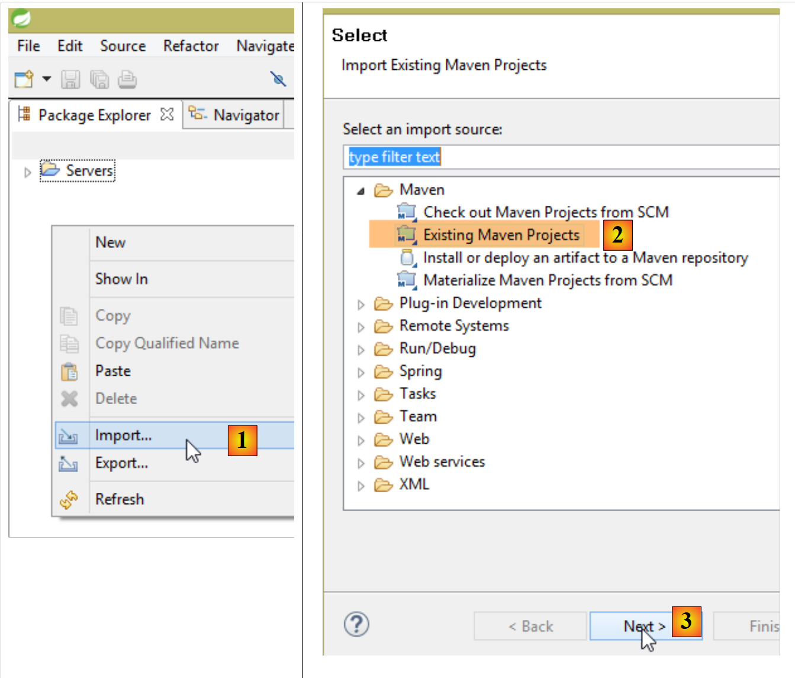
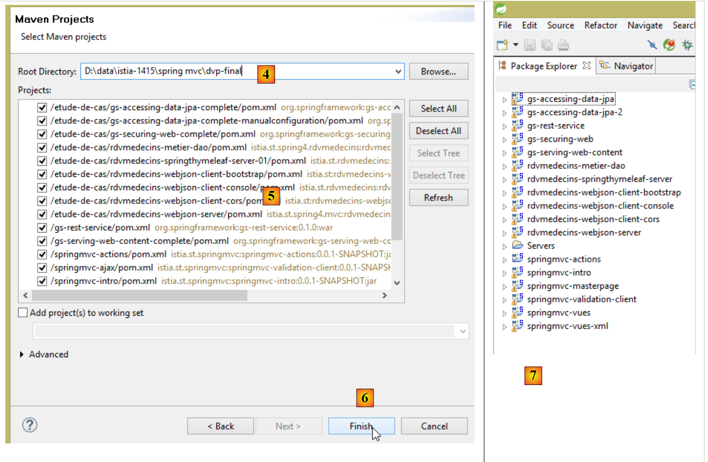
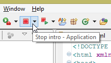
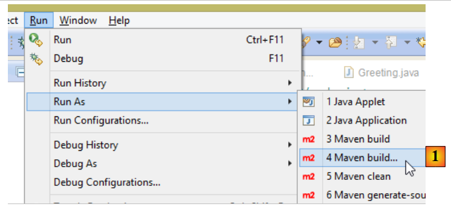

1. Introdução
O PDF deste documento está disponível |AQUI|.
Os exemplos deste documento estão disponíveis |AQUI|.
Propomos aqui apresentar, através de exemplos, os conceitos importantes do Spring MVC, um framework Web Java que fornece uma estrutura para o desenvolvimento de aplicações Web de acordo com o modelo MVC (Modelo – Vista – Controlador). O Spring MVC é um ramo do ecossistema Spring [http://projects.spring.io/spring-framework/]. Apresentamos também o motor de vistas Thymeleaf [http://www.thymeleaf.org/].
Este curso destina-se a leitores com um domínio sólido da linguagem Java. Não é necessário ter conhecimentos de programação web.
Embora detalhado, este documento está provavelmente incompleto. O Spring é um framework imenso com inúmeras ramificações. Para aprofundar os conhecimentos sobre o Spring MVC, podem ser consultadas as seguintes referências:
- o documento de referência do framework Spring [http://docs.spring.io/spring/docs/current/spring-framework-reference/pdf/spring-framework-reference.pdf];
- existem inúmeros tutoriais sobre o Spring disponíveis no URL [http://spring.io/guides]
- o site de [developpez.com] dedicado ao Spring [http://spring.developpez.com/].
O documento foi escrito de forma a poder ser lido sem necessidade de um computador à mão. Por isso, são apresentadas muitas capturas de ecrã.
1.1. Sources
Este documento tem duas fontes principais:
- [Introdução ao ASP.NET MVC Framework através de exemplos (2013)]. O Spring MVC e o ASP.NET MVC são dois frameworks semelhantes, tendo o segundo sido desenvolvido muito depois do primeiro. Para poder comparar as duas estruturas, segui a mesma abordagem utilizada no documento sobre o ASP.NET e o MVC;
- o documento sobre o ASP.NET MVC não contém, por enquanto (dezembro de 2014), nenhum caso de estudo com a sua solução. Retomei aqui o caso de estudo do documento [Tutoriel AngularJS / Spring 4], que modifiquei da seguinte forma:
- o caso de estudo em [Um exemplo de cliente/servidor - AngularJS 1.x / Spring 4 (2014)] refere-se a uma aplicação cliente/servidor em que o servidor é um serviço web / jSON construído com Spring MVC e o cliente, um cliente AngularJS,
- neste documento, retoma-se o mesmo serviço web / jSON, mas o cliente é uma aplicação web de duas camadas [client jQuery] / [service web / jSON];
Para além destas fontes, procurei na Internet respostas às minhas perguntas. Foi sobretudo o site [http://stackoverflow.com/] que me foi útil.
1.2. As ferramentas utilizadas
Os exemplos que se seguem foram testados no seguinte ambiente:
- computador com Windows 8.1 Pro de 64 bits;
- JDK 1.8;
- IDE Spring Tool Suite 3.6.3 (ver parágrafo 9.3);
- navegador Chrome (os outros navegadores não foram utilizados);
- extensão do Chrome [Advanced Rest Client] (ver parágrafo 9.6);
Atenção ao JDK 1.8. Um dos métodos do estudo de caso utiliza um método do pacote [java.lang] do Java 8.
Todos os exemplos são projetos Maven que podem ser abertos tanto no Eclipse (IDE) como no NetBeans (IntellijIDEA). A seguir, as capturas de ecrã provêm do Spring Tool Suite (IDE), uma variante do Eclipse.
1.3. Os exemplos
Os exemplos estão disponíveis em URL [http://tahe.developpez.com/java/springmvc-thymeleaf] sob a forma de um ficheiro zip para descarregar.
 |
Para carregar todos os projetos no STS, deve-se proceder da seguinte forma:
 |
 |
- no [1-3], importe projetos Maven;
 |
- em [4], indique a pasta dos exemplos;
- em [5], selecione todos os projetos da pasta;
- em [6], confirme;
- em [7], os projetos importados;
1.4. O papel do Spring MVC numa aplicação Web
Vamos situar o Spring MVC no desenvolvimento de uma aplicação Web. Na maioria das vezes, esta será construída com base numa arquitetura multicamadas, como a seguinte:
 |
- a camada [Web] é a camada em contacto com o utilizador da aplicação Web. Este interage com a aplicação Web através de páginas Web visualizadas por um navegador. É nesta camada que se situa o Spring MVC e apenas nesta camada;
- a camada [métier] implementa as regras de gestão da aplicação, tais como o cálculo de um salário ou de uma fatura. Esta camada utiliza dados provenientes do utilizador através da camada [Web] e da camada SGBD através da camada [DAO];
- a camada [DAO] (Data Access Objects), a camada [ORM] (Object Relational Mapper) e o controlador JDBC gerem o acesso aos dados da camada SGBD. A camada [ORM] faz a ponte entre os objetos manipulados pela camada [DAO] e as linhas e colunas das tabelas de uma base de dados relacional. Aqui, utilizaremos o Hibernate ORM. Uma especificação denominada JPA (Java Persistence API) permite abstrair-se do ORM utilizado, caso este implemente essas especificações. É o caso do Hibernate e de outros ORM Java. Passaremos, portanto, a designar a camada ORM como a camada JPA;
- a integração das camadas é feita pelo framework Spring;
A maioria dos exemplos apresentados a seguir utilizará apenas uma camada, a camada [Web]:
 |
No entanto, este documento terminará com a construção de uma aplicação Web multicamadas:
 |
O navegador irá ligar-se a uma aplicação [Web1] implementada pelo Spring MVC / Thymeleaf, que irá buscar os seus dados a um serviço Web [Web2], também implementado com o Spring MVC. Esta segunda aplicação Web acederá a uma base de dados.
1.5. O modelo de desenvolvimento do Spring MVC
O Spring MVC implementa o modelo de arquitetura denominado MVC (Modelo – Vista – Controlador) da seguinte forma:
 |
O processamento de um pedido de um cliente decorre da seguinte forma:
- pedido — os URL solicitados têm o formato http://machine:port/contexte/Action/param1/param2/....?p1=v1&p2=v2&... O [Front Controller] utiliza um ficheiro de configuração ou anotações Java para «encaminhar» o pedido para o controlador correto e para a ação correta dentro desse controlador. Para tal, utiliza o campo [Action] do URL. O restante do URL [/param1/param2/...] é constituído por parâmetros opcionais que serão transmitidos à ação. O C de MVC é, neste caso, a cadeia [Front Controller, Contrôleur, Action]. Se nenhum controlador puder processar a ação solicitada, o servidor Web responderá que a ação URL solicitada não foi encontrada.
- processamento
- A ação selecionada pode utilizar os parâmetros parami que a ação [Front Controller] lhe transmitiu. Estes podem provir de várias fontes:
- do caminho [/param1/param2/...] do URL,
- dos parâmetros [p1=v1&p2=v2] do URL,
- dos parâmetros enviados pelo navegador juntamente com o seu pedido;
- no processamento do pedido do utilizador, a ação pode necessitar da camada [métier] [2b]. Uma vez processado o pedido do cliente, este pode gerar várias respostas. Um exemplo clássico é:
- uma página de erro, caso a solicitação não tenha podido ser processada corretamente
- uma página de confirmação, caso contrário
- a ação solicita que uma determinada vista seja apresentada: [3]. Esta vista irá apresentar dados a que se chama o modelo da vista. É o M de MVC. A ação irá criar este modelo M [2c] e solicitar que uma vista V seja apresentada [3];
- resposta — a vista V selecionada utiliza o modelo M criado pela ação para inicializar as partes dinâmicas da resposta HTML que deve enviar ao cliente e, em seguida, envia essa resposta.
Agora, vamos esclarecer a relação entre a arquitetura web MVC e a arquitetura em camadas. Dependendo da definição que se atribuir ao modelo, estes dois conceitos podem estar ou não relacionados. Consideremos uma aplicação web Spring MVC de uma camada:
 |
Se implementarmos a camada [Web] com o Spring MVC, teremos, de facto, uma arquitetura web MVC, mas não uma arquitetura multicamadas. Neste caso, a camada [web] encarregar-se-á de tudo: apresentação, lógica de negócio e acesso aos dados. São as ações que realizarão esse trabalho.
Agora, consideremos uma arquitetura web multicamadas:
 |
A camada [Web] pode ser implementada sem framework e sem seguir o modelo MVC. Temos, então, uma arquitetura multicamadas, mas a camada Web não implementa o modelo MVC.
Por exemplo, no mundo .NET, a camada [Web] acimaacima pode ser implementada com ASP.NET e MVC, obtendo-se assim uma arquitetura em camadas com uma camada [Web] do tipo MVC. Feito isto, é possível substituir esta camada ASP.NET MVC por uma camada ASP.NET clássica (WebForms), mantendo o resto (de negócio, DAO, ORM) inalterado. Temos então uma arquitetura em camadas com uma camada [Web] que já não é do tipo MVC.
Em MVC, referimos que o modelo M era o da vista V, c.a.d, ou seja, o conjunto de dados apresentados pela vista V. É fornecida outra definição do modelo M de MVC:
 |
Muitos autores consideram que o que se encontra à direita da camada [Web] constitui o modelo M do MVC. Para evitar ambiguidades, pode-se referir-se:
- do modelo do domínio quando nos referimos a tudo o que está à direita da camada [Web]
- do modelo da vista, quando nos referimos aos dados apresentados por uma vista V
Daqui em diante, o termo «modelo M» designará exclusivamente o modelo de uma vista V.
1.6. Um primeiro projeto Spring MVC
A partir de agora, vamos trabalhar com a Spring Tool Suite (IDE), uma variante do Eclipse personalizada para o Spring. O site [http://spring.io/guides] disponibiliza tutoriais de introdução para explorar o ecossistema Spring. Vamos seguir um deles para descobrir a configuração do Maven necessária para um projeto Spring MVC.
Nota: a compreensão dos detalhes do projeto escapará à maioria dos principiantes. Isso não é importante. Esses detalhes são explicados mais adiante neste documento. Limitar-nos-emos a reproduzir os passos.
1.6.1. O projeto de demonstração
 |
- em [1], importamos um dos guias do Spring;
 |
- em [2], selecionamos o exemplo [Serving Web Content];
- em [3], selecionamos o projeto Maven;
- em [4], selecionamos a versão final do guia;
- em [5], confirmamos;
- em [6], o projeto importado;
Vamos analisar o projeto, começando pela sua configuração Maven.
1.6.2. Configuração do Maven
O ficheiro [pom.xml] é o seguinte:
<?xml version="1.0" encoding="UTF-8"?>
<project xmlns="http://maven.apache.org/POM/4.0.0" xmlns:xsi="http://www.w3.org/2001/XMLSchema-instance"
xsi:schemaLocation="http://maven.apache.org/POM/4.0.0 http://maven.apache.org/xsd/maven-4.0.0.xsd">
<modelVersion>4.0.0</modelVersion>
<groupId>org.springframework</groupId>
<artifactId>gs-serving-web-content</artifactId>
<version>0.1.0</version>
<parent>
<groupId>org.springframework.boot</groupId>
<artifactId>spring-boot-starter-parent</artifactId>
<version>1.1.9.RELEASE</version>
</parent>
<dependencies>
<dependency>
<groupId>org.springframework.boot</groupId>
<artifactId>spring-boot-starter-thymeleaf</artifactId>
</dependency>
</dependencies>
<properties>
<start-class>hello.Application</start-class>
</properties>
<build>
<plugins>
<plugin>
<groupId>org.springframework.boot</groupId>
<artifactId>spring-boot-maven-plugin</artifactId>
</plugin>
</plugins>
</build>
<repositories>
<repository>
<id>spring-milestone</id>
<url>https://repo.spring.io/libs-release</url>
</repository>
</repositories>
<pluginRepositories>
<pluginRepository>
<id>spring-milestone</id>
<url>https://repo.spring.io/libs-release</url>
</pluginRepository>
</pluginRepositories>
</project>
- linhas 6-8: as propriedades do projeto Maven. Falta uma baliza [<packaging>] que indique o tipo do ficheiro produzido pela compilação do Maven. Na ausência desta, é utilizado o tipo [jar]. A aplicação é, portanto, uma aplicação executável do tipo consola, e não uma aplicação web, caso em que o pacote seria [war];
- linhas 10-14: o projeto Maven tem um projeto pai [spring-boot-starter-parent]. É este que define a maior parte das dependências do projeto. Estas podem ser suficientes, caso em que não se adicionam mais, ou não, caso em que se adicionam as dependências em falta;
- linhas 17-20: o artefacto [spring-boot-starter-thymeleaf] traz consigo as bibliotecas necessárias para um projeto Spring MVC utilizado em conjunto com um motor de visualização denominado [Thymeleaf]. Este artefacto inclui um grande número de bibliotecas, incluindo as de um servidor Tomcat incorporado. É neste servidor que a aplicação será executada;
As bibliotecas incluídas nesta configuração são muito numerosas:
 |  |
Acima, vemos os arquivos do servidor Tomcat.
O Spring Boot é um ramo do ecossistema Spring [http://projects.spring.io/spring-boot/]. Este projeto tem como objetivo reduzir ao mínimo a configuração dos projetos Spring. Para tal, o Spring Boot realiza uma autoconfiguração com base nas dependências presentes no Classpath do projeto. O Spring Boot fornece inúmeras dependências prontas a utilizar. Assim, a dependência [spring-boot-starter-thymeleaf] encontrada no projeto Maven anterior traz todas as dependências necessárias para uma aplicação Spring MVC que utilize o motor de visualizações [Thymeleaf]. Com estas duas características:
- dependências prontas a utilizar;
- autoconfiguração baseada nessas dependências e em valores por defeito «razoáveis», é possível ter muito rapidamente uma aplicação Spring MVC operacional. É o caso do projeto aqui analisado;
1.6.3. A arquitetura de uma aplicação Spring MVC
O Spring MVC implementa o modelo de arquitetura denominado MVC (Modelo – Vista – Controlador):
 |
O processamento de um pedido de um cliente decorre da seguinte forma:
- pedido — os URL solicitados têm o formato http://machine:port/contexte/Action/param1/param2/....?p1=v1&p2=v2&... A [Dispatcher Servlet] é a classe do Spring que processa os URL recebidos. Esta «encaminha» o URL para a ação que deve processá-lo. Estas ações são métodos de classes específicas denominadas [Contrôleurs]. O C de MVC é, neste caso, a cadeia [Dispatcher Servlet, Contrôleur, Action]. Se nenhuma ação tiver sido configurada para processar o URL recebido, o servlet [Dispatcher Servlet] responderá que o URL solicitado não foi encontrado (erro 404 NOT FOUND);
- processamento
- a ação selecionada pode utilizar os parâmetros parami que a servlet [Dispatcher Servlet] lhe transmitiu. Estes podem provir de várias fontes:
- do caminho [/param1/param2/...] do URL,
- dos parâmetros [p1=v1&p2=v2] do URL,
- dos parâmetros enviados pelo navegador juntamente com o seu pedido;
- no processamento do pedido do utilizador, a ação pode necessitar da camada [metier] [2b]. Uma vez processado o pedido do cliente, este pode gerar várias respostas. Um exemplo clássico é:
- uma página de erro, caso a solicitação não tenha podido ser processada corretamente
- uma página de confirmação, caso contrário
- a ação solicita que uma determinada vista seja apresentada: [3]. Esta vista irá apresentar dados a que se chama o modelo da vista. É o M de MVC. A ação irá criar este modelo M [2c] e solicitar que uma vista V seja apresentada [3];
- resposta — a vista V selecionada utiliza o modelo M criado pela ação para inicializar as partes dinâmicas da resposta HTML que deve enviar ao cliente e, em seguida, envia essa resposta.
Vamos analisar estes diferentes elementos no projeto em estudo.
1.6.4. O controlador C
 |
A aplicação importada possui o seguinte controlador:
package hello;
import org.springframework.stereotype.Controller;
import org.springframework.ui.Model;
import org.springframework.web.bind.annotation.RequestMapping;
import org.springframework.web.bind.annotation.RequestParam;
@Controller
public class GreetingController {
@RequestMapping("/greeting")
public String greeting(@RequestParam(value="name", required=false, defaultValue="World") String name, Model model) {
model.addAttribute("name", name);
return "greeting";
}
}
- linha 8: a anotação [@Controller] transforma a classe [GreetingController] num controlador Spring, ou seja, os seus métodos são registados para processar URL. Um controlador Spring é um singleton. É criado numa única instância;
- linha 11: a anotação [@RequestMapping] indica o URL que o método processa, neste caso o URL [/greeting]. Veremos mais adiante que este URL pode ser configurado e que é possível recuperar esses parâmetros;
- linha 12: o método aceita dois parâmetros:
- [String name]: este parâmetro é inicializado por um parâmetro com o nome [name] na consulta processada, por exemplo, [/greeting?name=alfonse]. Este parâmetro é opcional ([required=false]) e, quando não estiver presente, o parâmetro [name] assumirá o valor «World» ([defaultValue="World"]),
- [Model model] é um modelo de vista. É passado vazio e cabe à ação (o método greeting) preenchê-lo. É este modelo que será transmitido à vista que a ação irá apresentar. Trata-se, portanto, de um modelo de vista;
- linha 13: o valor de [name] é inserido no modelo da vista. A classe [Model] funciona como um dicionário;
- linha 14: o método devolve o nome da vista que deve apresentar o modelo construído. O nome exato da vista depende da configuração de [Thymeleaf]. Na ausência desta, a vista aqui apresentada será a vista [/templates/greeting.html] ou a pasta [templates] deve estar na raiz do Classpath do projeto;
Vamos analisar o nosso projeto Eclipse:
 |
As pastas [src/main/java] e [src/main/resources] são ambas pastas cujo conteúdo será colocado no Classpath do projeto. No caso de [src/main/java], serão colocadas as versões compiladas dos códigos-fonte Java. O conteúdo da pasta [src/main/resources], por sua vez, é colocado no Classpath sem alterações. Vemos, portanto, que a pasta [templates] estará no Classpath do projeto [1].
É possível verificar isto na janela [Navigator] do Eclipse, no projeto [2-3]. A pasta [target] é gerada pela compilação (denominada build) do projeto. A pasta [classes] representa a raiz do Classpath. Verifica-se que a pasta [templates] está presente nessa raiz.
1.6.5. A vista V
No MVC, acabámos de ver o controlador C e o modelo de vista M. A vista V é aqui representada pelo seguinte ficheiro [greeting.html]:
<!DOCTYPE HTML>
<html xmlns:th="http://www.thymeleaf.org">
<head>
<title>Getting Started: Serving Web Content</title>
<meta http-equiv="Content-Type" content="text/html; charset=UTF-8" />
</head>
<body>
<p th:text="'Hello, ' + ${name} + '!'" />
</body>
</html>
- linha 2: o espaço de nomes das balizas Thymeleaf;
- linha 8: uma baliza <p> (parágrafo) com um atributo Thymeleaf. O atributo [th:text] define o conteúdo do parágrafo. Dentro da cadeia de caracteres, temos a expressão [${name}]. Isto significa que pretendemos o valor do atributo [name] do modelo da vista. Ora, recordamos que este atributo foi inserido no modelo pela ação:
model.addAttribute("name", name);
O primeiro parâmetro define o nome do atributo, o segundo o seu valor.
1.6.6. Execução
 |
A classe [Application.java] é a classe executável do projeto. O seu código é o seguinte:
package hello;
import org.springframework.boot.autoconfigure.EnableAutoConfiguration;
import org.springframework.boot.SpringApplication;
import org.springframework.context.annotation.ComponentScan;
@ComponentScan
@EnableAutoConfiguration
public class Application {
public static void main(String[] args) {
SpringApplication.run(Application.class, args);
}
}
- linha 11: a classe é executável com um método [main] específico para aplicações de consola. A classe [SpringApplication] da linha 12 irá iniciar o servidor Tomcat presente nas dependências e implementar o serviço web nesse servidor;
- linha 4: verifica-se que a classe [SpringApplication] pertence ao projeto [Spring Boot];
- linha 12: o primeiro parâmetro é a classe que configura o projeto, o segundo são eventuais parâmetros;
- linha 8: a anotação [@EnableAutoConfiguration] solicita ao Spring Boot que efetue a configuração do projeto;
- linha 7: a anotação [@ComponentScan] faz com que a pasta que contém a classe [Application] seja explorada para procurar os componentes Spring. Será encontrado um, a classe [GreetingController], que possui a anotação [@Controller], o que a torna um componente Spring;
Vamos executar o projeto:
 |
Obtêm-se os seguintes registos da consola:
- linha 13: o servidor Tomcat inicia na porta 8080 (linha 12);
- linha 17: o servlet [DispatcherServlet] está presente;
- linha 20: o método [hello.GreetingController.greeting] foi detetado, bem como o URL, que processa o [/greeting];
Para testar a aplicação web, solicitamos o URL [http://localhost:8080/greeting]:
 |  |
Pode ser interessante ver os cabeçalhos HTTP enviados pelo servidor. Para tal, vamos utilizar o plugin do Chrome chamado [Advanced Rest Client] (ver parágrafo 9.6):
 |
- em [1], o URL solicitado;
- em [2], é utilizado o método GET;
- em [3], o servidor indicou que estava a enviar uma resposta no formato HTML;
- em [4], a resposta HTML;
- em [5], solicita-se o mesmo URL, mas desta vez com um POST;
- em [7], as informações são enviadas para o servidor na forma [urlencoded];
- em [6], o parâmetro «name» com o seu valor;
- em [8], o navegador indica ao servidor que lhe está a enviar informações [urlencoded];
- em [9], a resposta HTML do servidor;
Para encerrar a aplicação:
 |  |  |
1.6.7. Criação de um arquivo executável
É possível criar um arquivo executável fora do Eclipse. A configuração necessária encontra-se no ficheiro [pom.xml]:
<properties>
<start-class>hello.Application</start-class>
</properties>
<build>
<plugins>
<plugin>
<groupId>org.springframework.boot</groupId>
<artifactId>spring-boot-maven-plugin</artifactId>
</plugin>
</plugins>
</build>
- as linhas 7 a 10 definem o plugin que irá criar o arquivo executável;
- a linha 2 define a classe executável do projeto;
O procedimento é o seguinte:
 |
- em [1]: executa-se um alvo Maven;
 |
- em [2]: existem dois objetivos (goals): [clean] para eliminar a pasta [target] do projeto Maven e [package] para a regenerar;
- em [3]: a pasta [target] gerada será criada nesta pasta;
- em [4]: gera-se o alvo;
Nota: para que a geração seja bem-sucedida, é necessário que o JVM utilizado pelo STS seja um JDK [Window / Preferences / Java / Installed JREs]:
 |
Nos registos que aparecem na consola, é importante que o plugin [spring-boot-maven-plugin] conste. É este que gera o arquivo executável.
Na consola, acedemos à pasta gerada:
gs-serving-web-content-complete\target>dir
...
Répertoire de D:\data\istia-1415\spring mvc\dvp\gs-serving-web-content-complete
\target
27/11/2014 17:07 <DIR> .
27/11/2014 17:07 <DIR> ..
27/11/2014 17:07 <DIR> classes
27/11/2014 17:07 <DIR> generated-sources
27/11/2014 17:07 13 419 551 gs-serving-web-content-0.1.0.jar
27/11/2014 17:07 3 522 gs-serving-web-content-0.1.0.jar.original
27/11/2014 17:07 <DIR> maven-archiver
27/11/2014 17:07 <DIR> maven-status
- linha 12: o arquivo gerado;
Este arquivo é executado da seguinte forma:
gs-serving-web-content-complete\target>java -jar gs-serving-web-content-0.1.0.jar
. ____ _ __ _ _
/\\ / ___'_ __ _ _(_)_ __ __ _ \ \ \ \
( ( )\___ | '_ | '_| | '_ \/ _` | \ \ \ \
\\/ ___)| |_)| | | | | || (_| | ) ) ) )
' |____| .__|_| |_|_| |_\__, | / / / /
=========|_|==============|___/=/_/_/_/
:: Spring Boot :: (v1.1.9.RELEASE)
2014-11-27 17:14:50.439 INFO 8172 --- [ main] hello.Application : Starting Application on Gportpers3 with PID 8172 (D:\data\istia-1415\spring mvc\dvp\gs-serving-web-content-complete\target\gs-serving-web-content-0.1.0.jar started by ST in D:\data\istia-1415\spring mvc\dvp\gs-serving-web-content-complete\target)
2014-11-27 17:14:50.491 INFO 8172 --- [ main] ationConfigEmbeddedWebApplicationContext : Refreshing org.springframework.boot.context.embedded.AnnotationConfigEmbeddedWebApplicationContext@12f4ec3a: startup date [Thu Nov 27 17:14:50 CET 2014]; root of context hierarchy
Nota: é necessário, previamente, parar o serviço web que possa ter sido iniciado no Eclipse (ver página 17).
Agora que a aplicação web está em execução, é possível aceder-lhe através de um navegador:
 |
1.6.8. Implantar a aplicação num servidor Tomcat
Embora o Spring Boot seja muito prático no modo de desenvolvimento, uma aplicação em produção será implementada num servidor Tomcat real. Eis como proceder:
Altere o ficheiro [pom.xml] da seguinte forma:
<?xml version="1.0" encoding="UTF-8"?>
<project xmlns="http://maven.apache.org/POM/4.0.0" xmlns:xsi="http://www.w3.org/2001/XMLSchema-instance"
xsi:schemaLocation="http://maven.apache.org/POM/4.0.0 http://maven.apache.org/xsd/maven-4.0.0.xsd">
<modelVersion>4.0.0</modelVersion>
<groupId>org.springframework</groupId>
<artifactId>gs-serving-web-content</artifactId>
<version>0.1.0</version>
<packaging>war</packaging>
<parent>
<groupId>org.springframework.boot</groupId>
<artifactId>spring-boot-starter-parent</artifactId>
<version>1.1.9.RELEASE</version>
</parent>
<dependencies>
<!-- ambiente Thymeleaf -->
<dependency>
<groupId>org.springframework.boot</groupId>
<artifactId>spring-boot-starter-thymeleaf</artifactId>
</dependency>
<!-- geração do WAR -->
<!-- <dependência>
<groupId>org.springframework.boot</groupId>
<artifactId>spring-boot-starter-tomcat</artifactId>
<scope>provided</scope>
</dependency> -->
</dependencies>
<properties>
<start-class>hello.Application</start-class>
</properties>
<build>
<plugins>
<plugin>
<groupId>org.springframework.boot</groupId>
<artifactId>spring-boot-maven-plugin</artifactId>
</plugin>
</plugins>
</build>
<repositories>
<repository>
<id>spring-milestone</id>
<url>https://repo.spring.io/libs-release</url>
</repository>
</repositories>
<pluginRepositories>
<pluginRepository>
<id>spring-milestone</id>
<url>https://repo.spring.io/libs-release</url>
</pluginRepository>
</pluginRepositories>
</project>
As alterações devem ser feitas em dois locais:
- linha 9: é necessário indicar que se vai gerar um arquivo WAR (Web ARchive);
- linhas 24-28: é necessário adicionar uma dependência do artefacto [spring-boot-starter-tomcat]. Este artefacto inclui todas as classes do Tomcat nas dependências do projeto;
- linha 27: este artefacto é o [provided], ou seja, os arquivos correspondentes não serão incluídos no WAR gerado. Na verdade, esses arquivos estarão disponíveis no servidor Tomcat onde a aplicação será executada;
Na verdade, se analisarmos as dependências atuais do projeto, verificamos que a dependência [spring-boot-starter-tomcat] já está presente:
 |
Não há, portanto, necessidade de a adicionar ao ficheiro [pom.xml]. Colocámo-la em comentários para referência.
Além disso, é necessário configurar a aplicação web. Na ausência do ficheiro [web.xml], isso é feito com uma classe que herda de [SpringBootServletInitializer]:
 |
A classe [ApplicationInitializer] é a seguinte:
package hello;
import org.springframework.boot.builder.SpringApplicationBuilder;
import org.springframework.boot.context.web.SpringBootServletInitializer;
public class ApplicationInitializer extends SpringBootServletInitializer {
@Override
protected SpringApplicationBuilder configure(SpringApplicationBuilder application) {
return application.sources(Application.class);
}
}
- linha 6: a classe [ApplicationInitializer] estende a classe [SpringBootServletInitializer];
- linha 9: o método [configure] é redefinido (linha 8);
- linha 10: é fornecida a classe que configura o projeto;
Para executar o projeto, pode-se proceder da seguinte forma:
 |
- em [1], executa-se o projeto num dos servidores registados no IDE Eclipse;
- em [2], seleciona-se acima [Tomcat v8.0];
Feito isto, pode-se aceder ao URL [http://localhost:8080/gs-rest-service/greeting/?name=Mitchell] num navegador:
 |
Nota: dependendo das versões do [tomcat] e do [tc Server Developer], esta execução pode falhar. Foi o que aconteceu com o [Apache Tomcat 8.0.3 et 8.0.15], por exemplo. No caso acima, a versão do Tomcat utilizada foi a [8.0.9].
Já sabemos como gerar um arquivo WAR. Posteriormente, continuaremos a trabalhar com o Spring Boot e o seu arquivo JAR executável.
1.7. Um segundo projeto Spring: MVC
1.7.1. O projeto de demonstração
 |
- em [1], importamos um dos guias do Spring;
 |
- em [2], selecionamos o exemplo [Rest Service];
- em [3], selecionamos o projeto Maven;
- em [4], selecionamos a versão final do guia;
- em [5], confirmamos;
- em [6], o projeto importado;
Os serviços web acessíveis através de URL padrão e que fornecem texto jSON são frequentemente designados por serviços REST (REpresentational State Transfer). Neste documento, limitarei-me a chamar ao serviço que vamos construir um serviço web / jSON. Um serviço é considerado Restful se respeitar determinadas regras. Não procurei respeitar essas regras.
Vamos agora analisar o projeto importado, começando pela sua configuração Maven.
1.7.2. Configuração do Maven
O ficheiro [pom.xml] é o seguinte:
<?xml version="1.0" encoding="UTF-8"?>
<project xmlns="http://maven.apache.org/POM/4.0.0" xmlns:xsi="http://www.w3.org/2001/XMLSchema-instance"
xsi:schemaLocation="http://maven.apache.org/POM/4.0.0 http://maven.apache.org/xsd/maven-4.0.0.xsd">
<modelVersion>4.0.0</modelVersion>
<groupId>org.springframework</groupId>
<artifactId>gs-rest-service</artifactId>
<version>0.1.0</version>
<parent>
<groupId>org.springframework.boot</groupId>
<artifactId>spring-boot-starter-parent</artifactId>
<version>1.1.9.RELEASE</version>
</parent>
<dependencies>
<dependency>
<groupId>org.springframework.boot</groupId>
<artifactId>spring-boot-starter-web</artifactId>
</dependency>
</dependencies>
<properties>
<start-class>hello.Application</start-class>
</properties>
<build>
<plugins>
<plugin>
<groupId>org.springframework.boot</groupId>
<artifactId>spring-boot-maven-plugin</artifactId>
</plugin>
</plugins>
</build>
<repositories>
<repository>
<id>spring-releases</id>
<url>https://repo.spring.io/libs-release</url>
</repository>
</repositories>
<pluginRepositories>
<pluginRepository>
<id>spring-releases</id>
<url>https://repo.spring.io/libs-release</url>
</pluginRepository>
</pluginRepositories>
</project>
- linhas 6-8: as propriedades do projeto Maven. Falta uma baliza [<packaging>] que indique o tipo do ficheiro produzido pela compilação do Maven. Na ausência desta, é utilizado o tipo [jar]. A aplicação é, portanto, uma aplicação executável do tipo consola, e não uma aplicação web, caso em que o pacote seria [war];
- linhas 10-14: o projeto Maven tem um projeto pai [spring-boot-starter-parent]. É este que define a maior parte das dependências do projeto. Estas podem ser suficientes, caso em que não se adicionam mais, ou não, caso em que se adicionam as dependências em falta;
- linhas 17-20: o artefacto [spring-boot-starter-web] traz consigo as bibliotecas necessárias para um projeto Spring MVC do tipo serviço web, onde não há vistas geradas. Este artefacto inclui um grande número de bibliotecas, incluindo as de um servidor Tomcat incorporado. É neste servidor que a aplicação será executada;
As bibliotecas incluídas nesta configuração são muito numerosas:
 |  |
Acima, vemos os três arquivos do servidor Tomcat.
1.7.3. A arquitetura de um serviço Spring [web / jSON]
Recorde-se como o Spring MVC implementa o modelo MVC:
 |
O processamento de um pedido de um cliente decorre da seguinte forma:
- pedido — os URL solicitados têm o formato http://machine:port/contexte/Action/param1/param2/....?p1=v1&p2=v2&... A [Dispatcher Servlet] é a classe do Spring que processa os URL recebidos. Esta «encaminha» o URL para a ação que deve processá-lo. Estas ações são métodos de classes específicas denominadas [Contrôleurs]. O C de MVC é, neste caso, a cadeia [Dispatcher Servlet, Contrôleur, Action]. Se nenhuma ação tiver sido configurada para processar o URL recebido, o servlet [Dispatcher Servlet] responderá que o URL solicitado não foi encontrado (erro 404 NOT FOUND);
- processamento
- a ação selecionada pode utilizar os parâmetros parami que a servlet [Dispatcher Servlet] lhe transmitiu. Estes podem provir de várias fontes:
- do caminho [/param1/param2/...] do URL,
- dos parâmetros [p1=v1&p2=v2] do URL,
- de parâmetros enviados pelo navegador juntamente com o seu pedido;
- no processamento do pedido do utilizador, a ação pode necessitar da camada [metier] [2b]. Uma vez processado o pedido do cliente, este pode gerar várias respostas. Um exemplo clássico é:
- uma página de erro, caso a solicitação não tenha podido ser processada corretamente
- uma página de confirmação, caso contrário
- a ação solicita que uma determinada vista seja apresentada [3]. Esta vista irá apresentar dados a que se chama o modelo da vista. É o M de MVC. A ação irá criar este modelo M [2c] e solicitar que uma vista V seja apresentada [3];
- resposta — a vista V selecionada utiliza o modelo M criado pela ação para inicializar as partes dinâmicas da resposta HTML que deve enviar ao cliente e, em seguida, envia essa resposta.
Para um serviço web / jSON, a arquitetura anterior é ligeiramente alterada:
 |
- em [4a], o modelo, que é uma classe Java, é transformado numa cadeia jSON por uma biblioteca jSON;
- em [4b], esta cadeia jSON é enviada para o navegador;
1.7.4. O controlador C
 |
A aplicação importada tem o seguinte controlador:
package hello;
import java.util.concurrent.atomic.AtomicLong;
import org.springframework.web.bind.annotation.RequestMapping;
import org.springframework.web.bind.annotation.RequestParam;
import org.springframework.web.bind.annotation.RestController;
@RestController
public class GreetingController {
private static final String template = "Hello, %s!";
private final AtomicLong counter = new AtomicLong();
@RequestMapping("/greeting")
public Greeting greeting(@RequestParam(value = "name", defaultValue = "World") String name) {
return new Greeting(counter.incrementAndGet(), String.format(template, name));
}
}
- linha 9: a anotação [@RestController] transforma a classe [GreetingController] num controlador Spring, ou seja, os seus métodos estão registados para processar URL. Já vimos a anotação semelhante [@Controller]. O resultado dos métodos desse controlador era um tipo [String], que correspondia ao nome da vista a apresentar. Aqui é diferente. Os métodos de um controlador do tipo [@RestController] devolvem objetos que são serializados para serem enviados ao navegador. O tipo de serialização realizada depende da configuração do Spring MVC. Neste caso, serão serializados como jSON. É a presença de uma biblioteca jSON nas dependências do projeto que faz com que o Spring Boot, por meio de autoconfiguração, configure o projeto desta forma;
- linha 14: a anotação [@RequestMapping] indica o URL que o método processa, neste caso o URL [/greeting];
- linha 15: já explicámos a anotação [@RequestParam]. O resultado devolvido pelo método é um objeto do tipo [Greeting].
- linha 12: um inteiro longo de tipo atómico. Isto significa que suporta acesso concorrente. Várias threads podem querer incrementar a variável [counter] ao mesmo tempo. Isto será feito de forma segura. Uma thread só pode ler o valor do contador se a thread que o está a modificar tiver concluído a sua modificação.
1.7.5. O modelo M
O modelo M produzido pelo método anterior é o seguinte objeto [Greeting]:
 |
package hello;
public class Greeting {
private final long id;
private final String content;
public Greeting(long id, String content) {
this.id = id;
this.content = content;
}
public long getId() {
return id;
}
public String getContent() {
return content;
}
}
A transformação jSON deste objeto criará a cadeia de caracteres {"id":n,"content":"texto"}. No final, a cadeia jSON produzida pelo método do controlador terá o seguinte formato:
{"id":2,"content":"Hello, World!"}
ou
{"id":2,"content":"Hello, John!"}
1.7.6. Execução
 |
A classe [Application.java] é a classe executável do projeto. O seu código é o seguinte:
package hello;
import org.springframework.boot.autoconfigure.EnableAutoConfiguration;
import org.springframework.boot.SpringApplication;
import org.springframework.context.annotation.ComponentScan;
@ComponentScan
@EnableAutoConfiguration
public class Application {
public static void main(String[] args) {
SpringApplication.run(Application.class, args);
}
}
Já abordámos e explicámos este código no exemplo anterior.
1.7.7. Execução do projeto
Vamos executar o projeto:
|
Obtêm-se os seguintes registos da consola:
- linha 13: o servidor Tomcat inicia na porta 8080 (linha 12);
- linha 17: o servlet [DispatcherServlet] está presente;
- linha 20: o método [GreetingController.greeting] foi detetado;
Para testar a aplicação web, solicitamos o URL [http://localhost:8080/greeting]:
 |  |
Recebemos, de facto, a cadeia jSON esperada.
Nota: este exemplo não funcionou com o navegador integrado do Eclipse.
Pode ser interessante ver os cabeçalhos HTTP enviados pelo servidor. Para tal, vamos utilizar o plugin do Chrome chamado [Advanced Rest Client] (ver Anexos, parágrafo 9.6):
 |
- em [1], o URL solicitado;
- em [2], é utilizado o método GET;
- em [3], a resposta jSON;
- em [4], o servidor indicou que estava a enviar uma resposta no formato jSON;
- em [5], solicita-se o mesmo URL, mas desta vez com um POST;
- em [7], as informações são enviadas ao servidor na forma [urlencoded];
- em [6], o parâmetro «name» com o seu valor;
- em [8], o navegador indica ao servidor que lhe está a enviar informações [urlencoded];
- em [9], a resposta jSON do servidor;
1.7.8. Criação de um arquivo executável
Tal como fizemos no projeto anterior, criamos um arquivo executável:
 |
 |
- em [1]: executamos um alvo Maven;
- em [2]: existem dois objetivos (goals): [clean] para eliminar a pasta [target] do projeto Maven e [package] para a regenerar;
- em [3]: a pasta [target] gerada será criada nesta pasta;
- em [4]: é gerado o alvo;
Nos registos que aparecem na consola, é importante verificar se o plugin [spring-boot-maven-plugin] aparece. É este que gera o arquivo executável.
Na consola, acedemos à pasta gerada:
D:\Temp\wksSTS\gs-rest-service\target>dir
...
11/06/2014 15:30 <DIR> classes
11/06/2014 15:30 <DIR> generated-sources
11/06/2014 15:30 11 073 572 gs-rest-service-0.1.0.jar
11/06/2014 15:30 3 690 gs-rest-service-0.1.0.jar.original
11/06/2014 15:30 <DIR> maven-archiver
11/06/2014 15:30 <DIR> maven-status
...
- linha 5: o arquivo gerado;
Este arquivo é executado da seguinte forma:
D:\Temp\wksSTS\gs-rest-service-complete\target>java -jar gs-rest-service-0.1.0.jar
. ____ _ __ _ _
/\\ / ___'_ __ _ _(_)_ __ __ _ \ \ \ \
( ( )\___ | '_ | '_| | '_ \/ _` | \ \ \ \
\\/ ___)| |_)| | | | | || (_| | ) ) ) )
' |____| .__|_| |_|_| |_\__, | / / / /
=========|_|==============|___/=/_/_/_/
:: Spring Boot :: (v1.1.0.RELEASE)
2014-06-11 15:32:47.088 INFO 4972 --- [ main] hello.Application
: Starting Application on Gportpers3 with PID 4972 (D:\Temp\wk
sSTS\gs-rest-service-complete\target\gs-rest-service-0.1.0.jar started by ST in
D:\Temp\wksSTS\gs-rest-service-complete\target)
...
Nota: é necessário, previamente, parar o serviço web que possa ter sido iniciado no Eclipse (ver parágrafo 1.6.6).
Agora que a aplicação web está em funcionamento, é possível aceder-lhe através de um navegador:
 |
1.7.9. Implantar a aplicação num servidor Tomcat
Tal como foi feito no projeto anterior, alteramos o ficheiro [pom.xml] da seguinte forma:
<?xml version="1.0" encoding="UTF-8"?>
<project xmlns="http://maven.apache.org/POM/4.0.0" xmlns:xsi="http://www.w3.org/2001/XMLSchema-instance"
xsi:schemaLocation="http://maven.apache.org/POM/4.0.0 http://maven.apache.org/xsd/maven-4.0.0.xsd">
<modelVersion>4.0.0</modelVersion>
<groupId>org.springframework</groupId>
<artifactId>gs-rest-service</artifactId>
<version>0.1.0</version>
<packaging>war</packaging>
...
</project>
- linha 9: é necessário indicar que vamos gerar um arquivo WAR (Web ARchive);
Além disso, é necessário configurar a aplicação web. Na ausência do ficheiro [web.xml], isto é feito através de uma classe que herda de [SpringBootServletInitializer]:
 |
A classe [ApplicationInitializer] é a seguinte:
package hello;
import org.springframework.boot.builder.SpringApplicationBuilder;
import org.springframework.boot.context.web.SpringBootServletInitializer;
public class ApplicationInitializer extends SpringBootServletInitializer {
@Override
protected SpringApplicationBuilder configure(SpringApplicationBuilder application) {
return application.sources(Application.class);
}
}
- linha 6: a classe [ApplicationInitializer] estende a classe [SpringBootServletInitializer];
- linha 9: o método [configure] é redefinido (linha 8);
- linha 10: é fornecida a classe que configura o projeto;
Para executar o projeto, pode-se proceder da seguinte forma:
 |
- no [1-2], executa-se o projeto num dos servidores registados no IDE Eclipse;
Feito isto, pode-se aceder ao URL [http://localhost:8080/gs-rest-service/greeting/?name=Mitchell] num navegador:
|
1.8. Conclusion
Introduzimos dois tipos de projetos Spring MVC:
- um projeto em que a aplicação web envia um fluxo HTML para o navegador. Este fluxo é gerado pelo motor de visualizações [Thymeleaf];
- um projeto em que a aplicação web envia um fluxo jSON para o navegador;
No primeiro caso, o projeto necessita de duas dependências Maven:
<parent>
<groupId>org.springframework.boot</groupId>
<artifactId>spring-boot-starter-parent</artifactId>
<version>1.1.9.RELEASE</version>
</parent>
<dependencies>
<dependency>
<groupId>org.springframework.boot</groupId>
<artifactId>spring-boot-starter-thymeleaf</artifactId>
</dependency>
</dependencies>
No segundo caso, as dependências do Maven são as seguintes:
<parent>
<groupId>org.springframework.boot</groupId>
<artifactId>spring-boot-starter-parent</artifactId>
<version>1.1.9.RELEASE</version>
</parent>
<dependencies>
<dependency>
<groupId>org.springframework.boot</groupId>
<artifactId>spring-boot-starter-web</artifactId>
</dependency>
</dependencies>
As dependências que estas configurações acarretam em cadeia são muito numerosas e muitas delas são desnecessárias. Para a implementação da aplicação, utilizar-se-á uma configuração manual do Maven, na qual estarão presentes apenas as dependências necessárias ao projeto.
Vamos agora regressar aos fundamentos da programação web, apresentando dois conceitos básicos:
- o diálogo HTTP (HyperText Transfer Protocol) entre um navegador e uma aplicação web;
- a linguagem HTML (HyperText Markup Language) que o navegador interpreta para apresentar uma página que recebeu;